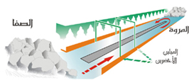

السعي بين الصفا والمروة

شروط السعي بين الصفا والمروة
- السعي يكون بعد الطواف: يجب أن يكون السعي بين الصفا والمروة بعد الطواف بالبيت، وإن لم يسبقْه طواف فلا يحتسب ولا يعتبر من مناسك العمرة، حيثُ إنّ السعيَ ليسَ عبادة مستقلّةً بل هو عبادة تابعة للطواف.
- لبدْء بالصفا والانتهاء بالمروة.
- السعي في المسعى جميعه: أي أن يسعى المسلم في كلّ المسافة بين الصفا والمروة، وألا يترك جزءاً منها، فلو ترك ولو جزءاً صغيراً يبطل السعي.
- الموالاة في السعي: والمقصود في ذلك عدم وجود مدّة زمنيّة كبيرة بين الشوط والذي بعدَه، فيجوزُ للحاجّ أو المعتمر أن يجلسَ قليلاً للراحة بين الأشواط، ولكن لا يجوز الإطالة في الجلوس والفصل.